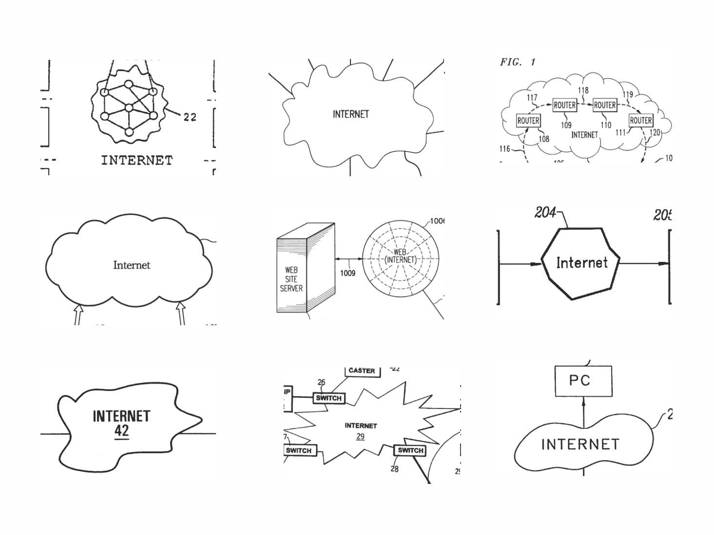
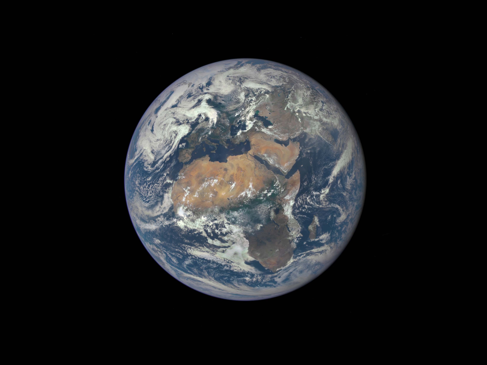
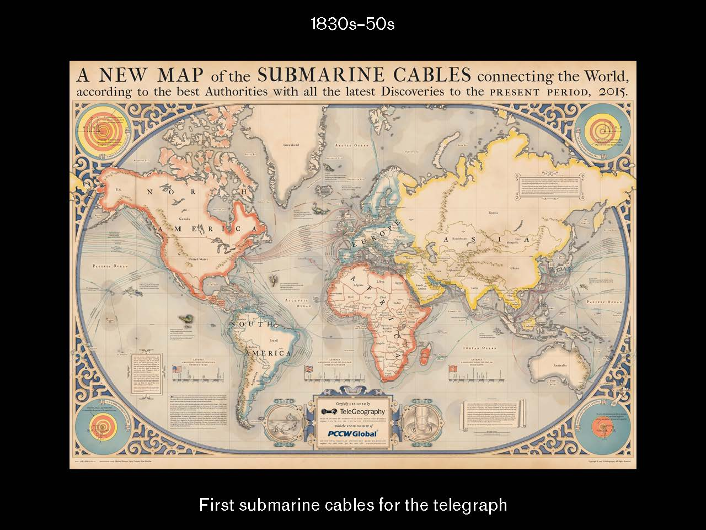
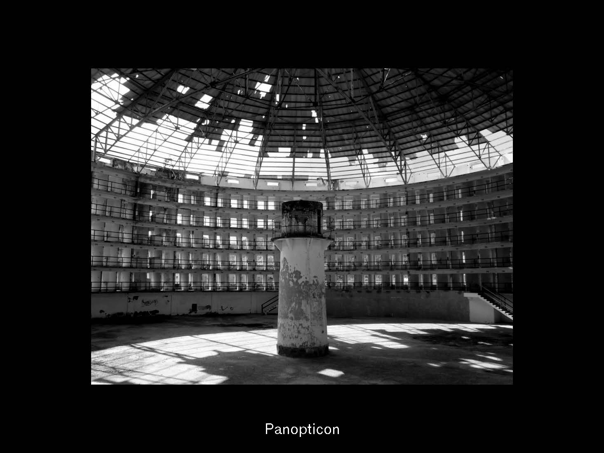
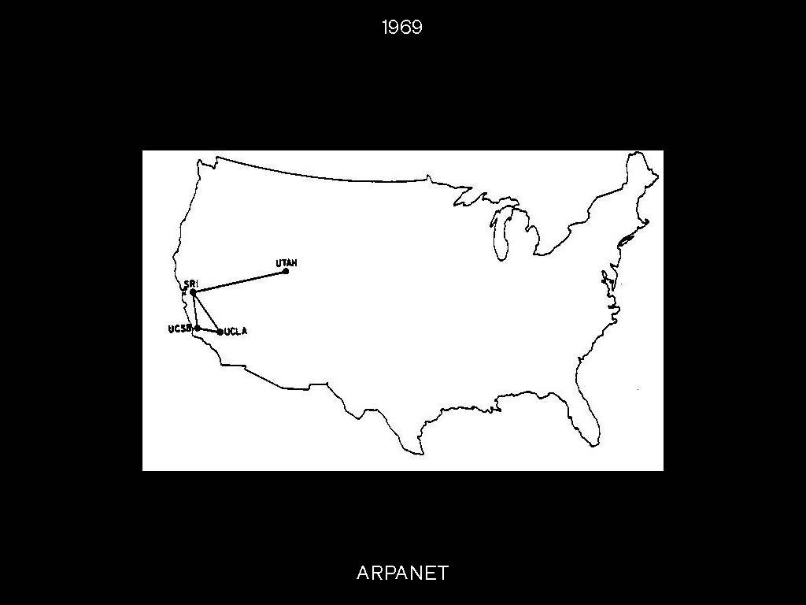
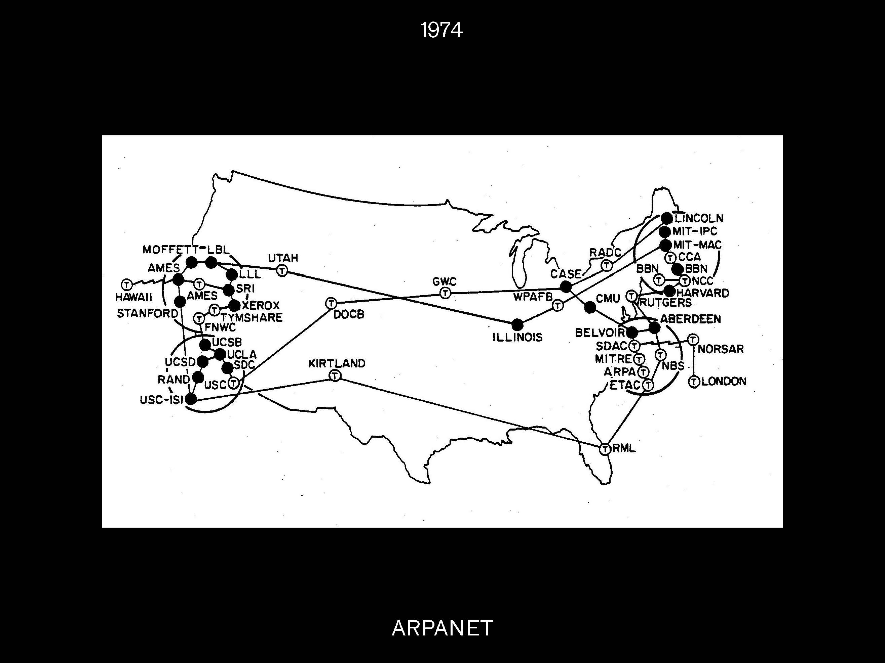

A non-complete intro to the History of the Internet
& Networks to create a basis for storytelling






"LO"

Type Challenge
Write out a short response to today's topic. It can be a short couple of sentences, but enough to be able to write out on a web page and take up space. Find a typeface you want to incorporate and embed it into your CSS. Position your type on the page and utilize type hierarchy to emphasize words, add interaction. Think of it similarly to designing a poster but with HTML and CSS. Think about composition, color and balance. We will share screenshots in discord after.